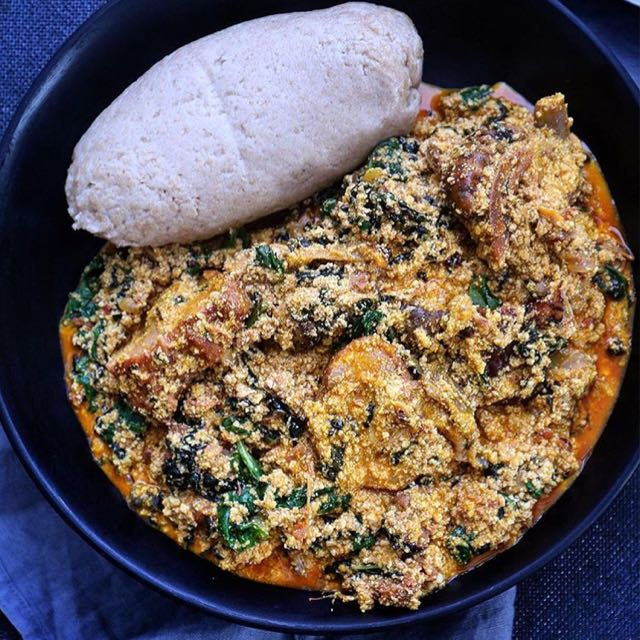

Egusi soup

photo by Abasswealth
Egusi soup is unarguably the most popular Nigerian soup.
So diverse that different recipes exist across different Nigerian ethnic groups
The Yorubas make efo elegusi while the Igbos make ofe egusi, all with similar ingredients but with slightly different approaches.
It's a delicious and hearty soup for those who like to try something different every once in a while.
Ingredients
- ¾ cup egusi seeds or pumpkin seeds
- 1½ pounds cubed beef stew meat and 1lb of roasted fish
- salt to taste
- ½ cup peanut oil
- 300ml of palm oil ( or 2 large tomatoes, chopped)
- 1 small onion, chopped
- 2 habanero peppers, seeded and minced
- 2 pounds fresh shrimp, peeled and deveined
- 18 ounces tomato sauce
- 1½ cups water
- 3 tablespoons tomato paste
- 1 pound fresh spinach or Ugu leaves, washed and chopped
Steps
- Place seeds in a blender; blend until mixture is powdery, 30 to 40 seconds. Set aside.
- Cut beef into bite-sized cubes; season with salt.
- Heat oil in a large pot over medium-high heat. Cook beef in hot oil until brown but not cooked through, 3 to 5 minutes.
- Place tomatoes, onion, and peppers in a blender; blend until smooth, about 30 seconds. Stir tomato mixture into beef; reduce heat to medium-low and cover. Cook until meat is tender, 40 to 50 minutes.
- Add shrimp, tomato sauce, water, and tomato paste; simmer for 10 minutes.
- Stir in spinach and powdered seeds. Continue simmering for 10 more minutes.
Ladies and gents, that's one of the many ways to prepare Egusi soup
Home